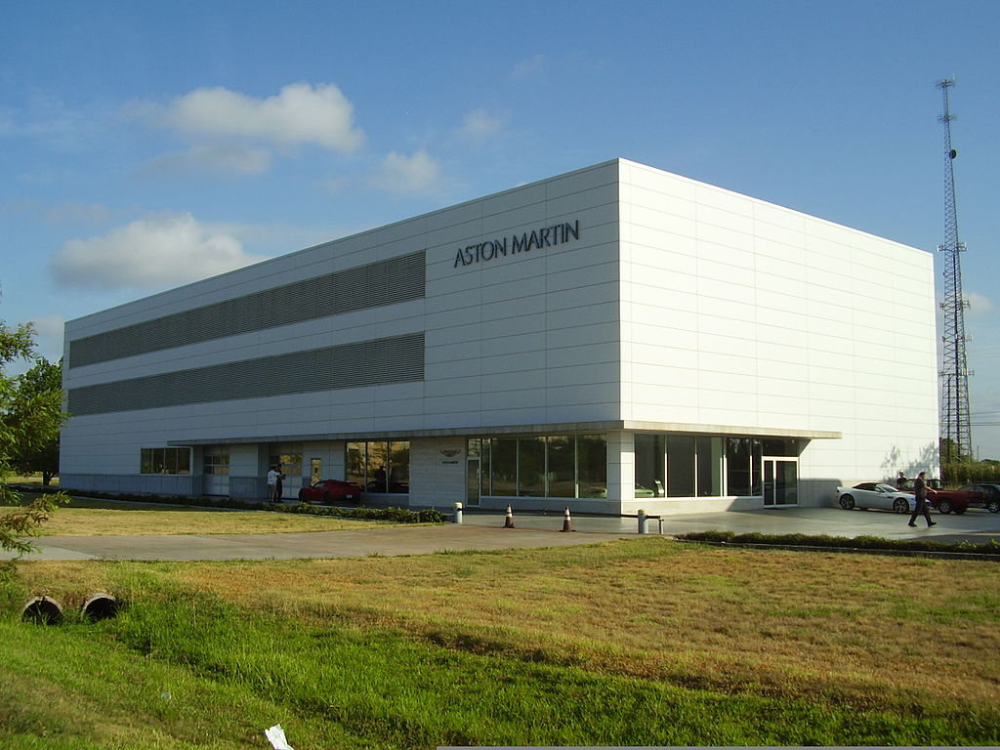

- Robert Bamford
- Lionel Martin
Aston Martin è una casa automobilistica britannica. Nata nel 1913 iniziò a costruire automobili con la denominazione Bamford & Martin. In seguito alla fusione con la Lagonda, altra marca inglese costruttrice di automobili di lusso, nel 1959 prese il nome di Aston Martin Lagonda. L'azienda, non di grandi dimensioni, ma d'élite nel panorama delle automobili sportive di prestigio, ancora oggi produce Gran Turismo realizzate con cura artigianale.
| Logo | |
| Stato | Regno Unito |
| Fondazione | 1913 a Londra |
| Fondata da |
|
| Settore | Automobilistico |
| Sito web | www.astonmartinlagonda.com |
L'evoluzione nel tempo del logo della Aston Martin:

Sede principale della Aston Martin a Gaydon in Inghilterra:
